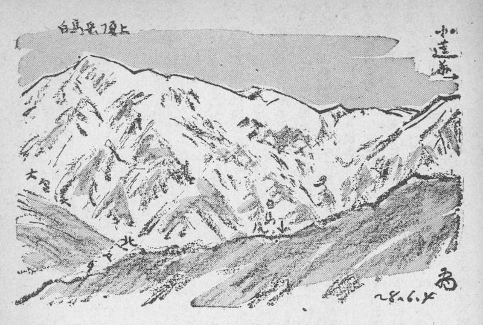
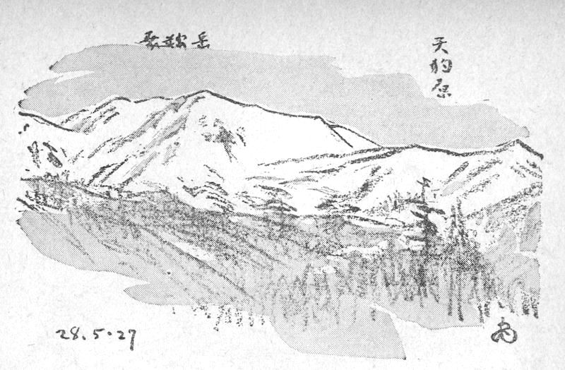
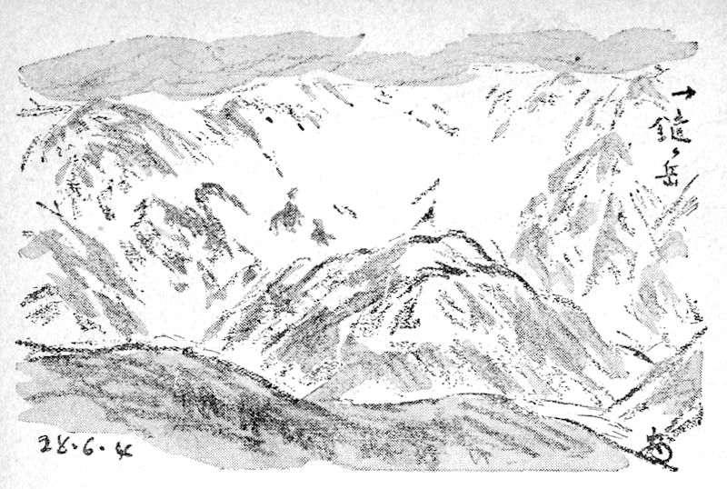
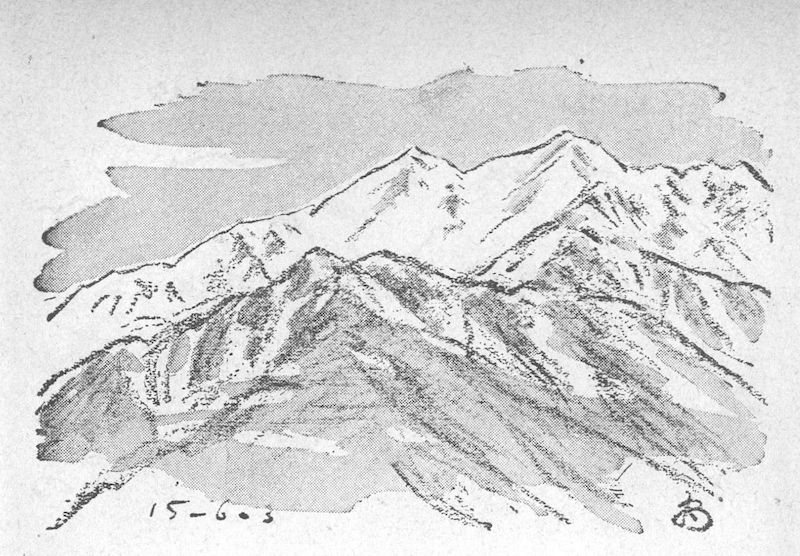
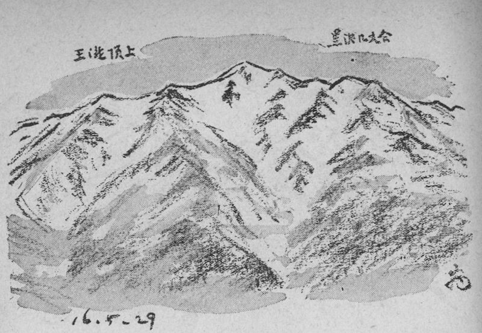
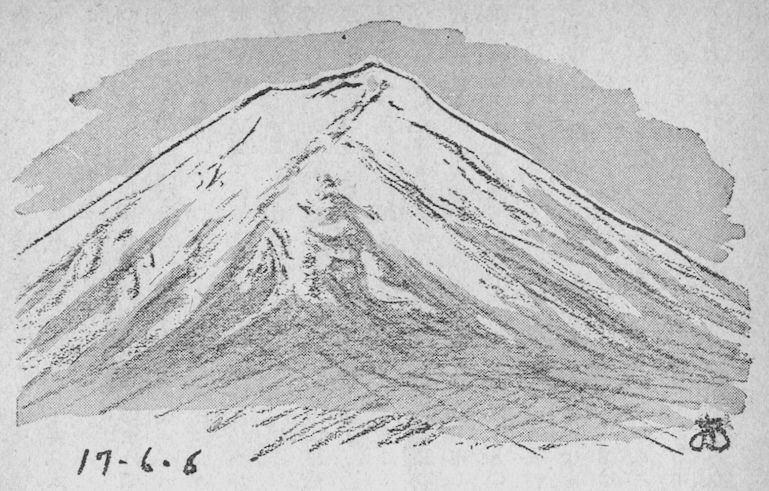

五月から六月にかけて、高根の雪が解けるにしたがい、山肌が処々に現われて来る。その山肌と雪とで作る斑紋が、見ようでは種々な物の形、例えば動物や人間などの姿に見えるものだ。その形は山肌が雪の中に黒く現わすのと、山肌に囲まれた雪が白く描くのとある。そういう形を山麓の農民は巧みに捕えて、何か身近な物の姿に見立て、昔から年々農事――稲作が主であるが――を始めるための頼りにして来た。それがここに記す幻像であって、民俗学の言葉では雪形と言う。そういうものが雪深い山国には沢山あって、今まで語り継がれているのは誠に意味深いことだ。
いったい農事というものは、豊凶の運命を大部分天候に左右される性質のもので古くから太陰暦に基づいて行われて来たし又それが本筋である。だが文字に書かれた暦はどこにも通用する代り、山間の局地局地には必ずしも的確な頼りとはなり難いうらみがある。そこへ行くと、この雪形はその土地、その年の季節の移り変りを端的に示すものだから、これほど頼りになるものはなかろう。言わば生きた暦である。その指示にしたがって春の農耕を始めたり進めて行けば、まず心安らかに収穫を期待できるというもので、そこに、この幻像発生の原因と意義があり、永い年代に伝承されて来た理由もあるのだ。しかも一方、美の観点から言っても、これは見逃すことのできない題材なのである。
ところで現今は農業技術が改良され、農業気象も精密になりかつ普及されつつあるから、この幻像に頼る度合は以前より大分薄らいだことは事実で、伝承もだんだん弱まって行く傾向にある。しかしわれらの祖先が遺したこのりっぱな文化財を、むざむざ消滅に任すのは誠に惜しむべきことだ。そこには祖先の、自然に対する尊崇と親和の心、物の形に関する鋭い感覚、一種の美意識、生活に根ざした智恵、そして永い世代にわたる自然の恩恵と、それに対する感謝の念、そういうものが皆この幻像に籠められているからである。そこでこれらの記録が大切なものになって来るわけだ。
この雪の幻像は、東北から中部にかけての山地、殊に山形、新潟、長野、山梨の各県にわたって数多く存在するが、ここにはそのうち日本アルプスのものを幾つか選んで図示して見よう。これらは私が実見し、調査した確実なものばかりで、未見のもの、疑問の多いものは省いた。まず北から……
これは雪の中に黒く馬の形を現わすもので、それは
出現の位置は、白馬本山の東面、頂上から少し北へ下った白馬沢の源頭、高距二千五、六百メートルの辺で、頭を南に向け、尾は勇ましく跳ね上って稜線を突破しそうに見え、今にも動き出すかと思うばかりだ。背には鞍が置かれ、首にハモ（頸輪）らしい物もある。故老によっては、馬を追う人の姿や曳綱まで教えてくれたが、そう言われれば全くそう見えるのも面白い。
時期は、昨年は五月下旬に出初め、全く形の整ったのは六月に入ってからであった。ちょうど代掻きの時期に一致していたのである。望見の範囲は、北城村の四谷以南と神城村の一部と思われる。これと以下三つの白馬連峯の雪形に関しては、地元の多くの人々に教を乞うたが、中でも北城村森上新田の矢口森栄君父子、同村大出の松沢元太郎氏に負うところ多大である。

白馬岳の代馬――北城村四谷より
これは笠を冠って左手に種の入ったビク（竹籠）を持ち、右手をひろげてあたかも種蒔きをする人の形であって、≪爺さん≫というのは、卒先して農の範を示す知恵深い人を意味するのであろうと思う。場所は白馬連峯の小蓮華からさらに北東に連なる乗鞍岳の、東南に向った雪の斜面に黒く影絵のように現われる。これなど今まで全く世に知られなかった珍らしい幻像の一つである。私は昨年春長いあいだ実見する機会を得たが、無論思いがけない初耳初もので、非常に嬉しく思った。そして何という種蒔爺に縁のある自分だろうとおかしくもあった。というのは、前に木曾御岳の種蒔爺（後出）も、私が偶然掘り出したものだったから。従来、種蒔爺さんといえば、爺ガ岳のが有名であり、次が木曾御岳であった。だから、これは正に三人めの種蒔爺さんに当るわけだ。

乗鞍岳（蓮華）の種蒔爺さん――北城村森上より
出現時期は無論、代馬などより早く、昨年は八十八夜（五月二日）には、もう一部分ではあるが出ていた。しかし全形が整ってそれらしくなったのは、五月半ばであったろう。この雪形の出るのが、言うまでもなく種蒔きの時期で、それも籾が主であるが、もとは麻を多く作ったから、その種を下ろすのにも、これを頼ったものだという故老の話であった。私が去年見た所では、八十八夜にはすでに苗代に若い緑が見られる処もあったから、昔よりは大分種蒔きの時期も早くなっているのであろう。それは前記のように農法の改良によるものと思われる。
観望の範囲はまず北城村一円であるが、北に寄っているだけ、森上付近が最も近くて明瞭である。なお南
これも昨年春の収穫で、やはり今まで全然世の中から隠されていたものだ。それも当然で、現地でも知らぬ人が多く、たとえ名を知っているにしろ異説ふんぷん、確実にその所在を心得ている人は、代馬や種蒔爺さんに比べても段ちがいに少ない。打捨てておけば、遠からずわからなくなったかも知れない、末期の際に来ていたらしい。
これらの幻像の出るのは、鑓ガ岳の南に続く

鑓ガ岳の鶴首と鶏――北城村四谷より
鶏は鶴のすぐ右手、カールの底に在って、形は誠に小さいが雌雄二羽が向い合い、雄鶏は頭を挙げて、さながらトキを作っているような姿勢であるのも面白い。私見ではこれらの実体は、或は
種蒔爺さんといえば、誰でも爺ガ岳のと思うほど、一番古くから知られているのはこれだ。明治の末年に山友故辻本満丸博士が、爺ガ岳の記録登山をされた頃、土地の農民について熱心に調査され、『山岳』に紹介されたので、登山界にも比較的早くから知られたのである。出る場所は、爺ガ岳の頂上から少し西に下った東南向き斜面で、幻像はやはり雪の地に黒く現われ、菅笠を冠り、手を拡げた立ち姿で、まず正面向きに近い。そして足元に苗代が出るのが特徴となっている。
この山が

爺ガ岳の種蒔爺さん――大町より
これが爺ガ岳のについで、二番目に知られた種蒔爺で、昭和十六年五月、私が御岳黒沢口の三合半、日ノ出滝に滞在して画作に従事していた時、たまたま私の写生画が縁になって、土地の人から教えられたものだ。当時私は意外な獲物に、大いに驚きかつ喜んで、帰来日本山岳会々報に紹介の筆をとったものである。
この爺さんも大きな菅笠を頂いているが、姿勢は明かに右向きで、腰の辺に種を入れた大きな袋を提げているのが特徴をなしている。この点、蓮華乗鞍のと似ているが、あれはやや左向きに近い後ろ姿で、種の入れ物が逆の位置になっている。これもやはり雪中に黒く出る。

木曾御嶽の種蒔爺さん――日ノ出滝より
出現地点は、絶頂劔ガ峯の直下、少し西寄りの東南向き斜面で、黒沢口九合目から王滝口頂上へ横切る、近道の下辺に当る。私が夏に踏査したところでは、そこに頂上から派出された幾条かの側尾根の一つ、少し偃松のある岩壁のあたりが、その主体らしく思われる。出現の時期は他のものと、まず大同小異であろう。私は六月の初旬にその崩れて行くさまも見た。望見の範囲は三岳村屋敷野、黒沢、王滝などから、北は
以上のほか、日本アルプスだけでも、南に白峯の農鳥、地蔵岳の農牛、北に蝶ガ岳の白蝶などがあり、木曾駒にも変った雪形が出ると聞いている。北陸から東北へかけての山々には、ちょっと拾って見ても、妙高の農牛、黒姫の寐牛、焼山の蝙蝠、白鳥山の鳥、米山の鯉、地紙山の地紙、

富士の豆蒔小僧――鳴沢村より
ただし調査に当っては、あくまで冷静な科学的態度が望ましく、徒らに主観に走ることを慎しむべきで、雪形の自家創作に陥るなどは禁物である。里人に尋ねる際にも、誘導的質問を避けるよう心がくべきことを強調したい。雪形の記録に大切な図画の描き方については、いささか私に持説があるが、長くなるから別の機会に譲る。なお、雪の幻像は秋の新雪の折にも、春ほど明瞭ではないが、一おう現われるものである。（昭和二十九年春）